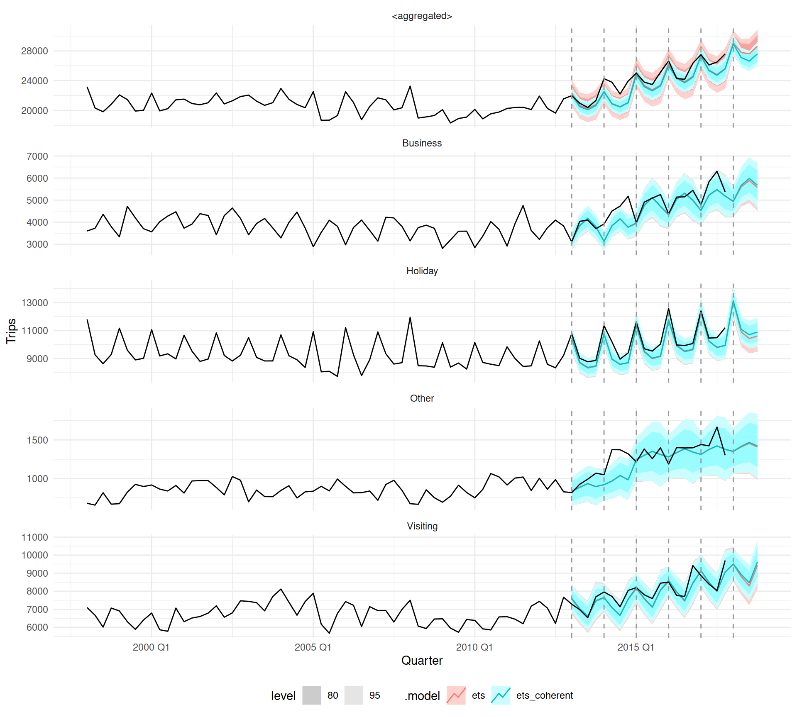

Reconciliation of structured time series forecasts with graphs
PhD confirmation presentation, 6th February 2024
Mitchell O’Hara-Wild, Monash University
Supervised by Rob Hyndman and George Athanasopolous


PhD thesis structure

Graph coherency constraints
Graphs flexibly describe cross-sectional relationships between time series.
Topic 1
Pruning data with graphs
Pruning graphs to remove uninformative time series can both improve forecasting accuracy and computation time.
Topic 2
Representing probabilistic forecasts
Vectorised distributions for use in a tidy forecasting workflow to adequately describe forecast uncertainty.
Topic 3
Temporal coherency constraints
Representing time with varied temporal granularities in a tidy time series data structure.
Topic 4

Tidy forecasting framework
Combining the foundational tools described above to support a tidy forecasting workflow.
Topic 5
Hierarchical coherence
Each aggregate has a single constraint
The basic constraint shown before is ‘hierarchical’

Hierarchical coherence
Each aggregate has a single constraint
Hierarchical series often have multiple layers
In graph terms, this is known as a polytree.
Grouped coherence
Considering origin and workplace
Attendance can be disaggregated by both origin and workplace…

Grouped coherence
Considering origin and workplace
and then further disaggregated by the other.
A grouped structure has the same top and bottom series.
Grouped coherence
Considering origin and workplace
The grouped structure can be plotted in a single graph.
In graph terms, this is a directed acyclical graph (DAG).
Temporal coherence
A time series can be disaggregated by temporal granularity
Relevant paper
Temporal reconciliation is described in Athanasopoulos et al. (2017).
What type of coherence structure is this?
This is a polytree, so this structure is hierarchical.

Temporal coherence
What type of coherence structure is this?
This structure has the same top and bottom series, so
temporal coherence is a grouped constraint.
Temporal coherence
Temporal coherence constraints are grouped can also be represented with directed acyclical graphs (DAGs).
Cross-temporal coherence
Since both grouped and temporal coherence are DAGs, the interaction between them is a single DAG.

Incomplete graphs
What if the coherency structure doesn’t completely aggregate, so that there are multiple top series.
This can occur for many reasons:
- Cross-validation with reconciliation
- Partial/local coherency
(e.g. not including worldwide total)

- Cross-validation with reconciliation
It makes no sense to aggregate folds of cross-validation.
A suitable DAG for cross-validated hierarchies is
Each disjoint graph can be reconciled separately.
Implementation in fable
Graph structures are embedded within tsibble keys using graphvec classes.
Useful functions
- Create aggregates from bottom series with
aggregate_key()
(and somedayaggregate_index()for temporal) - Or get artisanal with
agg_vec()andgraph_vec()for complex aggregation structures and graphs. - Add coherency constraints to models/forecasts with
reconcile()andmin_trace()
Succinctly describe constraints with symbolic language
Similar to modelling interactions in R (R Core Team 2021), common aggregation structures are described with symbolic language (Wilkinson and Rogers 1973).
Enhanced functionality
- Tools for identifying sub-graphs for exploring series
- Tools for changing the graph without removing data
- Tools for validating operations which change the graph

Examples with fable
# A tsibble: 24,320 x 5 [1Q]
# Key: Region, State, Purpose [304]
Quarter Region State Purpose Trips
<qtr> <chr> <chr> <chr> <dbl>
1 1998 Q1 Adelaide South Australia Business 135.
2 1998 Q2 Adelaide South Australia Business 110.
3 1998 Q3 Adelaide South Australia Business 166.
4 1998 Q4 Adelaide South Australia Business 127.
5 1999 Q1 Adelaide South Australia Business 137.
6 1999 Q2 Adelaide South Australia Business 200.
7 1999 Q3 Adelaide South Australia Business 169.
8 1999 Q4 Adelaide South Australia Business 134.
9 2000 Q1 Adelaide South Australia Business 154.
10 2000 Q2 Adelaide South Australia Business 169.
# i 24,310 more rowsExamples with fable
# A tsibble: 34,000 x 5 [1Q]
# Key: Purpose, State, Region [425]
Quarter Purpose State Region Trips
<qtr> <chr*> <chr*> <chr*> <dbl>
1 1998 Q1 <aggregated> <aggregated> <aggregated> 23182.
2 1998 Q2 <aggregated> <aggregated> <aggregated> 20323.
3 1998 Q3 <aggregated> <aggregated> <aggregated> 19827.
4 1998 Q4 <aggregated> <aggregated> <aggregated> 20830.
5 1999 Q1 <aggregated> <aggregated> <aggregated> 22087.
6 1999 Q2 <aggregated> <aggregated> <aggregated> 21458.
7 1999 Q3 <aggregated> <aggregated> <aggregated> 19914.
8 1999 Q4 <aggregated> <aggregated> <aggregated> 20028.
9 2000 Q1 <aggregated> <aggregated> <aggregated> 22339.
10 2000 Q2 <aggregated> <aggregated> <aggregated> 19941.
# i 33,990 more rowsExamples with fable
# A tibble: 425 x 4
Purpose State Region .rows
<chr*> <chr*> <chr*> <lis>
1 Business ACT Canberra [80]
2 Business ACT <aggregated> [80]
3 Business New South Wales Blue Mountains [80]
4 Business New South Wales Capital Country [80]
5 Business New South Wales Central Coast [80]
6 Business New South Wales Central NSW [80]
7 Business New South Wales Hunter [80]
8 Business New South Wales New England North West [80]
9 Business New South Wales North Coast NSW [80]
10 Business New South Wales Outback NSW [80]
# i 415 more rowsExamples with fable
# A tibble: 45 x 3
Purpose State .rows
<chr*> <chr*> <list<int>>
1 Business ACT [80]
2 Business New South Wales [80]
3 Business Northern Territory [80]
4 Business Queensland [80]
5 Business South Australia [80]
6 Business Tasmania [80]
7 Business Victoria [80]
8 Business Western Australia [80]
9 Business <aggregated> [80]
10 Holiday ACT [80]
11 Holiday New South Wales [80]
12 Holiday Northern Territory [80]
13 Holiday Queensland [80]
14 Holiday South Australia [80]
15 Holiday Tasmania [80]
16 Holiday Victoria [80]
17 Holiday Western Australia [80]
18 Holiday <aggregated> [80]
19 Other ACT [80]
20 Other New South Wales [80]
21 Other Northern Territory [80]
22 Other Queensland [80]
23 Other South Australia [80]
24 Other Tasmania [80]
25 Other Victoria [80]
26 Other Western Australia [80]
27 Other <aggregated> [80]
28 Visiting ACT [80]
29 Visiting New South Wales [80]
30 Visiting Northern Territory [80]
31 Visiting Queensland [80]
32 Visiting South Australia [80]
33 Visiting Tasmania [80]
34 Visiting Victoria [80]
35 Visiting Western Australia [80]
36 Visiting <aggregated> [80]
37 <aggregated> ACT [80]
38 <aggregated> New South Wales [80]
39 <aggregated> Northern Territory [80]
40 <aggregated> Queensland [80]
41 <aggregated> South Australia [80]
42 <aggregated> Tasmania [80]
43 <aggregated> Victoria [80]
44 <aggregated> Western Australia [80]
45 <aggregated> <aggregated> [80]Examples with fable
# A tibble: 33 x 3
Purpose State .rows
<chr*> <chr*> <list<int>>
1 Business ACT [80]
2 Business New South Wales [80]
3 Business Northern Territory [80]
4 Business Queensland [80]
5 Business South Australia [80]
6 Business Tasmania [80]
7 Business Victoria [80]
8 Business Western Australia [80]
9 Holiday ACT [80]
10 Holiday New South Wales [80]
11 Holiday Northern Territory [80]
12 Holiday Queensland [80]
13 Holiday South Australia [80]
14 Holiday Tasmania [80]
15 Holiday Victoria [80]
16 Holiday Western Australia [80]
17 Other ACT [80]
18 Other New South Wales [80]
19 Other Northern Territory [80]
20 Other Queensland [80]
21 Other South Australia [80]
22 Other Tasmania [80]
23 Other Victoria [80]
24 Other Western Australia [80]
25 Visiting ACT [80]
26 Visiting New South Wales [80]
27 Visiting Northern Territory [80]
28 Visiting Queensland [80]
29 Visiting South Australia [80]
30 Visiting Tasmania [80]
31 Visiting Victoria [80]
32 Visiting Western Australia [80]
33 <aggregated> <aggregated> [80]Examples with fable
# A tibble: 13 x 3
Purpose State .rows
<chr*> <chr*> <list<int>>
1 Business <aggregated> [80]
2 Holiday <aggregated> [80]
3 Other <aggregated> [80]
4 Visiting <aggregated> [80]
5 <aggregated> ACT [80]
6 <aggregated> New South Wales [80]
7 <aggregated> Northern Territory [80]
8 <aggregated> Queensland [80]
9 <aggregated> South Australia [80]
10 <aggregated> Tasmania [80]
11 <aggregated> Victoria [80]
12 <aggregated> Western Australia [80]
13 <aggregated> <aggregated> [80]Examples with fable
# A tibble: 12 x 3
Purpose State .rows
<chr*> <chr*> <list<int>>
1 Business <aggregated> [80]
2 Holiday <aggregated> [80]
3 Other <aggregated> [80]
4 Visiting <aggregated> [80]
5 <aggregated> ACT [80]
6 <aggregated> New South Wales [80]
7 <aggregated> Northern Territory [80]
8 <aggregated> Queensland [80]
9 <aggregated> South Australia [80]
10 <aggregated> Tasmania [80]
11 <aggregated> Victoria [80]
12 <aggregated> Western Australia [80]Examples with fable
tourism |>
aggregate_key(
Purpose,
Trips = sum(Trips)
) |>
stretch_tsibble(.step = 4, .init = 60) |>
key_data()# A tibble: 30 x 3
.id Purpose .rows
<int> <chr*> <list<int>>
1 1 Business [60]
2 1 Holiday [60]
3 1 Other [60]
4 1 Visiting [60]
5 1 <aggregated> [60]
6 2 Business [64]
7 2 Holiday [64]
8 2 Other [64]
9 2 Visiting [64]
10 2 <aggregated> [64]
11 3 Business [68]
12 3 Holiday [68]
13 3 Other [68]
14 3 Visiting [68]
15 3 <aggregated> [68]
16 4 Business [72]
17 4 Holiday [72]
18 4 Other [72]
19 4 Visiting [72]
20 4 <aggregated> [72]
21 5 Business [76]
22 5 Holiday [76]
23 5 Other [76]
24 5 Visiting [76]
25 5 <aggregated> [76]
26 6 Business [80]
27 6 Holiday [80]
28 6 Other [80]
29 6 Visiting [80]
30 6 <aggregated> [80]Examples with fable
tourism |>
aggregate_key(
Purpose,
Trips = sum(Trips)
) |>
stretch_tsibble(.step = 4, .init = 60) |>
model(ets = ETS(Trips)) |>
reconcile(ets_coherent = min_trace(ets)) |>
forecast(h = "1 year")# A fable: 240 x 6 [1Q]
# Key: .id, Purpose, .model [60]
.id Purpose .model Quarter Trips
<int> <chr*> <chr> <qtr> <dist>
1 1 Business ets 2013 Q1 N(3135, 46032)
2 1 Business ets 2013 Q2 N(3832, 73712)
3 1 Business ets 2013 Q3 N(4158, 93320)
4 1 Business ets 2013 Q4 N(3781, 88006)
5 1 Business ets_coherent 2013 Q1 N(3159, 45373)
6 1 Business ets_coherent 2013 Q2 N(3848, 69353)
7 1 Business ets_coherent 2013 Q3 N(4177, 86871)
8 1 Business ets_coherent 2013 Q4 N(3795, 83437)
9 1 Holiday ets 2013 Q1 N(10442, 211377)
10 1 Holiday ets 2013 Q2 N(8698, 146661)
# i 230 more rows
# i 1 more variable: .mean <dbl>Examples with fable

Recap
Coherence and graph theory
- Hierarchical coherence is a polytree.
- Grouped coherence is a restricted DAG.
- Graph coherence is an unrestricted DAG.
DAGs are a useful tool for representing structured time series and producing coherent forecasts.


What else?
Other benefits
- Access to efficient graph algorithms and ideas
- Exploration and description of structured time series
- Familiar computing grammar for coherent data
Future work
- Explore automatic processes for reducing the size of the graph to reduce complexity and improve accuracy
- Investigate alternative graph reconciliation methods (non-linear constraints, faster at-scale reconciliation)
PhD progression
Idea of graph coherency constraints
Working on improving reconciliation for fable, I set out to find a more general framework for representing coherency constraints.
Mar 2023
Presented graph coherency at ISF 2023
Received great support and useful feedback from attendees.
Awarded with a best student presentation award for the work, provided by Elsevier.
Jun 2023

Completed the coursework 🎓
Passed all coursework 🎉
Now to focus on the research!
Nov 2023
Created the graphvec package
Split out agg_vec() from fabletools, and extended support with graph_vec() and developed tools for multi-column graphs in tidy data frames.
Dec 2023

Draft of graph coherency paper
Paper is well structured and has a clear path toward completion. Some more work on applications with stronger motivating examples is needed.
Feb 2024
Confirmation report and presentation
Feb 2024
PhD timeline (2024)
Have a break!
On leave for two weeks in China 🥶
Happy new year! 🐉
Feb 2024
Complete graph coherency paper
Write, write, write.
Apr 2024
Feature based graph pruning
Develop a technique for pruning low-signal time series from a coherent graph structure to reduce complexity and increase forecasting performance.
May 2024
Presentation at ISF 2024
Present about pruning coherent time series.
June 2024

Presentation at useR! 2024
Presentation about the distributional package, which is the foundation for representing probabilistic forecasts in fable.
July 2024
Mid-candidature review and presentation
Feb 2025
PhD timeline (2025)
Finish graph pruning and distribution papers
Write more, write more, write more…
Feb 2025
Mixed temporal granularity vectors
Designing a framework for representing temporal moments, intervals, and granularities.
Apr 2025
Presentation at ISF 2025
About mixed temporal granularity forecasting and reconciliation with fable.
Jun 2025
Formalise the design of fable
Incorporate the foundations developed in the research above to enhance the design of tidy forecasting with fable.
Dec 2025
Final review and presentation
Feb 2026
Thanks for your time!
Final remarks
- I’m trying to build a user-friendly design framework for forecast reconciliation, and it’s uncovered lots of potential directions for future research.
- Next focus is mixed temporal granularities, which works well in the graph framework.
- Graphs provide a useful representation for all coherency constraints, including non-linear structures.